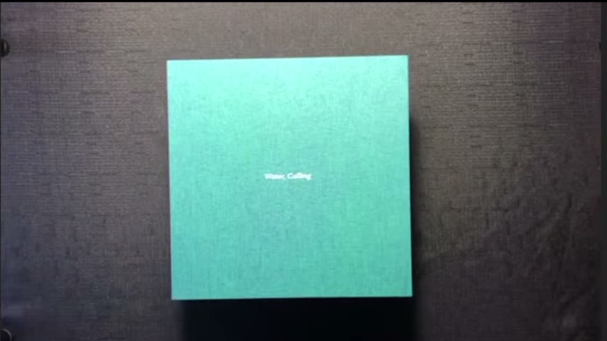
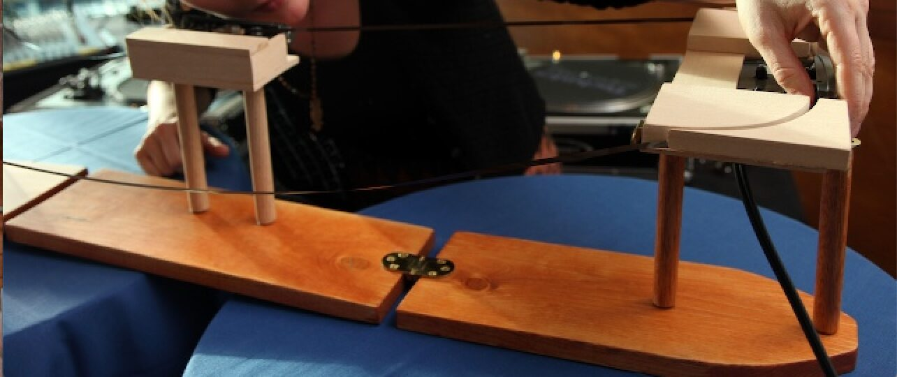
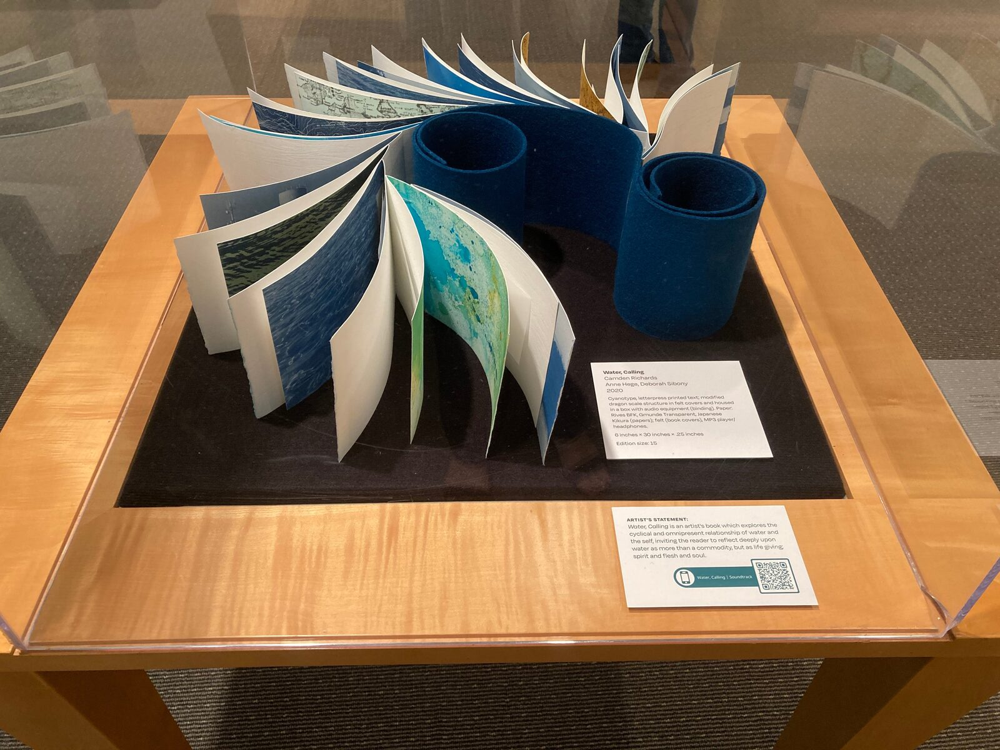

Inside These Waters from Water, Calling
Project Description
Inside These Waters, music by Anne Hege, text by Camden Richards, is an excerpt from the fifty-minute soundtrack for the artist book Water, Calling created by Camden Richards and Deborah Sibony. Water, Calling is a collaborative artist book that explores the cyclical and omnipresent relationship of water and the self, inviting the reader to reflect upon water as more than a commodity, but rather as life-giving: spirit, flesh, and soul. Using my analog, live-looping instrument, The Tape Machine, and my daily practice improvising on this instrument as a starting place, I recorded improvisations on the instrument and used this as the base tracks for this piece. The Tape Machine is a handbuilt instrument created from two altered cassette players and one altered cassette recorder. The recorder stands in the middle with one player on the left and one on the right. A unique tape loop, created for each playing, is strung between the cassette devices. There are no effects added except what the machine creates. I sing in real-time into the recorder and manage playback from each player, adjusting the volume for discrete speakers hard-panned right and left. The machine highlights the degradation of sound present in the recording, allowing for a clear understanding of what vocals are live and what are echoed through the machine. With live manipulations of the tape, I am able to imitate the pitch-bending effects of water. With this, the Tape Machine emulates the distortions present in the watery world. For Inside these Waters, I layered tape machine samples with field recordings of water, and synthesis samples, while using various effects and filtering to connect the listener to the unique properties of water.
Type of submission
Option 2 - NIME’s with a story - This music uses The Tape Machine which was demonstrated at NIME 2018.
Requirements
Online hosting of the premade video interweaving aspects of the book with this audio track.
Program Notes
Inside These Waters, music by Anne Hege, text by Camden Richards, is an excerpt from the fifty-minute soundtrack for the artist book Water, Calling created by Camden Richards and Deborah Sibony. Water, Calling is a collaborative artist book that explores the cyclical and omnipresent relationship of water and the self, inviting the reader to reflect upon water as more than a commodity, but rather as life-giving: spirit, flesh, and soul. Using the analog, live-looping instrument, The Tape Machine, as a starting place and a daily practice improvising on this instrument, I recorded improvisations on the instrument and used this as the base tracks for this piece. Imitating the pitch-bending effects of water, the Tape Machine emulates the distortions present in the watery world. I then wove these recordings of the tape machine with field recordings of water, and synthesis samples, while using various effects and filters to connect the listener to the unique properties of water.
Media
Inside these Waters audio file, an excerpt from Water, Calling

▶Video containing excerpts of a live presentation of the artist book Water, Calling and the Tape Machine blended with photo excerpts from the artists book accompanied by the recording of Inside These Waters, excerpted from the artist book soundtrack.


The Tape Machine, an analog, live looping instrument.


Artist book Water, Calling by redacted. Exhibited (information redacted)
Ethics Statement
"Inside These Waters" was composed, the text written, and the artist book created in Kensington, CA on the unceded territory of the Huchiun band of the Ohlone Indigenous people. Shuumi has been paid annually as an acknowledgment of being a guest on these properties. The author does not believe that there are any potential conflicts of interest financial or non-financial. All research participants gave full consent to participate. No animals were involved in this research. The composer and collaborators have created varying online elements to support a wider degree of accessibility. The book has been exhibited in public spaces. Some electronic elements were created using SuperCollider, an open-source software. The Tape Machine repurposes old technologies and materials (cassette players) for new creation but does use cassette tape in a disposable way (one unique loop for each piece). Much of the mixing, effects, and layering of elements was created using Ableton Live. Finally, the purpose of the work is to inspire curiosity, connection, and awareness about the ways we interact with and relate to water.
Acknowledgments
The author and collaborators would like to thank the SF Public Library and SF Center for the Book for their inclusion of Water, Calling in the exhibition Reclamation. We would like to thank all those who supported this collaboration including our families.